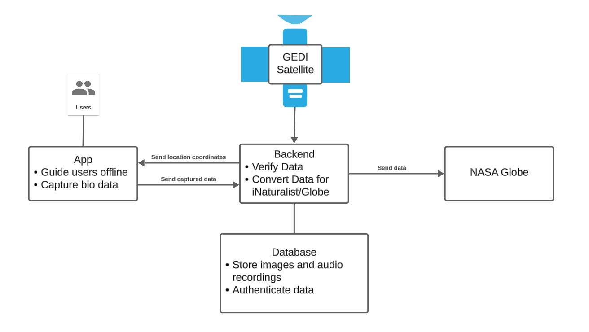

Project Description
The overall problem we are trying to solve is ensuring the validity of image and audio recordings uploaded by communities in areas with carbon footprints. An approach we are applying is ensuring that the data's coordinates matches with the ones given by NASA's GEDI coordinates of the specified area, within a margin of error. The main motivation for the project is avoiding scam artists from taking advantage of our app for their own benefits, as we plan on having payments involved later on. By ensuring the integrity of data, we can then send our collected data to another app such as iNaturalist for their own use.
Initial Project
The initial project concept was provided to us by Dr. Camille Gaillard, Dr. Jenna Keany, Dr. Chris Doughty, and Dr. Duan Biggs. Their proposal was to open up opportunities for populations directly impacted by conservation, specifically by ensuring the reliability of data collected by said communities by verifying the time and coordinate of acquired data, with the ability for the application to function offline. The application will also include a data authenticity feature, ensuring that the data collected were not forged.
Solution
Our proposed solution will use geolocation to track and monitor users while they undergo data collection. Using the user's location, we will check if they are in the correct area that we supply. After verifying the data, we will upload it to a database where it will be stored and recorded. The primary goal is to have a working citizen science app with protections in place against forged data. Additionally, the project will be able to be used on other existing citizen science apps for verifying data collection. The app will also work offline so that users will be able to collect data without connection and upload it later.